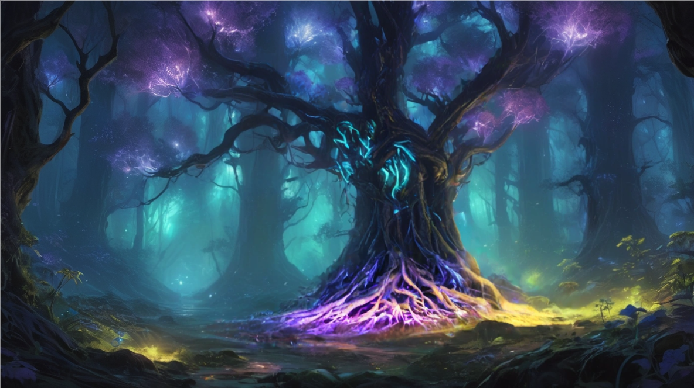
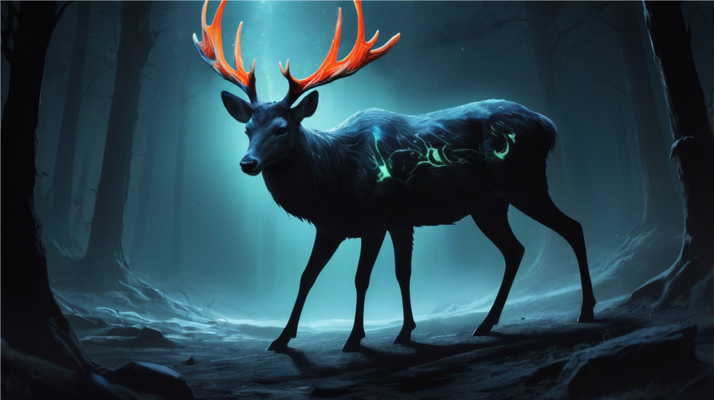

El aire cambió antes que el paisaje. Axel se detuvo en el sendero, sus orejas puntiagudas girando para captar un sonido que no terminaba de identificar. El arco descansaba cómodo en su hombro, pero sus dedos encontraron instintivamente la cuerda, acariciándola con la familiaridad de años de práctica. Algo susurraba entre los árboles, demasiado constante para ser viento, demasiado articulado para ser agua. Las primeras esporas ya flotaban en el aire como diminutas luciérnagas doradas, apenas perceptibles pero llevando consigo un aroma dulzón que hacía cosquillas en la nariz.
—¿Lo escuchas?—
preguntó, dirigiéndose hacia la figura envuelta en una capa oscura que caminaba a su lado. Seraphina levantó su cabeza triangular hacia las copas de los árboles, sus antenas moviéndose ligeramente para captar mejor los sonidos. Sus ojos compuestos, apagados durante la travesía, ahora brillaban con una intensidad que Axel no había visto desde que se conocieron. Cuando habló, su voz llevaba una nota de reconocimiento que él no esperaba.
—Son voces. Muchas voces hablando al mismo tiempo.—
Hizo una pausa, inclinando la cabeza con la gracia natural de su especie—.
—Creo que hemos llegado al Valle de los Susurradores.—
El sendero descendía ante ellos, serpenteando entre árboles que parecían ordinarios a primera vista. Pinos, robles, abedules... pero conforme se acercaron, Axel notó que algo estaba terriblemente mal. Los troncos eran translúcidos, como si estuvieran hechos de cristal empañado, y pequeñas luces corrían por la corteza como lágrimas de luz que nunca caían. Venas de luz azul-verdosa pulsaban por la superficie, conectando cada árbol en una red viviente. Las raíces expuestas brillaban con fosforescencia violeta, entrelazándose sobre el suelo como cables orgánicos que transmitían información luminosa a través del bosque. Colgando de las ramas, capullos cristalinos del tamaño de melones pulsaban con luz dorada y verde, liberando ocasionales nubes de esporas doradas que flotaban en el aire como polen mágico.

—El comerciante mapache nos dijo que aquí había alguien que conocía los secretos de las Lágrimas de Luna... nos advirtió que sería peligroso, pero que era nuestra única pista real.
Axel asintió, recordando la conversación con el mapache de tres días atrás:
—En el Valle de los Susurradores vive un ciervo anciano que conoce todos los secretos de las gemas celestiales. Pero cuidado, está bajo el control de algo muy antiguo y hambriento—
había dicho el mapache. Entre las raíces expuestas de los árboles neurona, estructuras que parecían nidos de avispas pero hechas de un material similar al ámbar colgaban como farolillos, cada una conteniendo formas vagamente reconocibles suspendidas en líquido dorado.
—Ten cuidado—
murmuró, notando cómo los destellos en el árbol se intensificaban conforme ella se acercaba. —No sabemos qué...— Las palabras murieron en su garganta cuando sintió un ligero hormigueo en sus pulmones. Una sensación extraña, como si pequeñas partículas estuvieran adhiriéndose al interior de su garganta. Una de las esporas doradas se había posado en su lengua, y ahora sentía cómo se disolvía lentamente, liberando un sabor metálico y dulce que le recordaba a miel fermentada.
Seraphina retiró su pata del árbol como si hubiera tocado fuego, tosiendo ligeramente.
—Algo... algo está entrando en mi sistema.—
Su voz temblaba ligeramente, y Axel pudo ver que sus ojos compuestos se habían oscurecido, reflejando la tensión natural de su especie.
—Siento... siento como si pequeñas criaturas estuvieran moviéndose por mis venas.—
Axel también comenzó a sentirlo: un cosquilleo sutil que se extendía desde sus pulmones hacia su sistema nervioso, como si diminutos insectos estuvieran explorando el interior de su cuerpo. Los capullos cristalinos en las ramas se agitaron, liberando más nubes de esporas que flotaron hacia ellos como polen inteligente. Un movimiento sutil llamó su atención. Los helechos que crecían al pie de los árboles neurona se estaban inclinando. No hacia la luz, como harían las plantas normales, sino hacia Seraphina. Y luego, lentamente, algunos de ellos comenzaron a inclinarse hacia él también.
—Seraphina—
dijo Axel, su voz más tensa de lo que pretendía—. Los helechos... nos están señalando.— Ella siguió su mirada y retrocedió un paso. Los helechos la siguieron con el movimiento, inclinándose aún más pronunciadamente en su dirección.
—Es como si nos estuvieran... catalogando.—
comenzó a decir, pero se detuvo cuando una sensación extraña lo invadió. El aire denso del valle, cargado de esporas casi imperceptibles, había comenzado a afectar sus sentidos de cazador. Podía sentir cómo su percepción se agudizaba de manera inusual, como si las partículas en suspensión actuaran como amplificadores sensoriales naturales. Los árboles neurona pulsaban con más intensidad, respondiendo aparentemente a los cambios químicos en el ambiente que ambos visitantes generaban. Axel se acercó instintivamente a Seraphina, notando que ella también parecía más alerta, sus antenas temblando ligeramente. Reconoció por primera vez desde que la conocía que el pelaje de su nuca se asentaba cerca de ella, que su respiración se acompasaba y un ronroneo involuntario vibraba en lo más profundo de su pecho, algo que no le ocurría con nadie más desde... desde la muerte de su padre. El recuerdo surgió vívidamente, y los árboles neurona reaccionaron al cambio emocional con pulsos más brillantes, como si detectaran las fluctuaciones en su estado mental.
—Están conectándose a nuestro sistema nervioso—
susurró Seraphina, y había preocupación en su voz. —Puedo sentir cómo pequeñas conexiones se forman en mi cerebro.— Entre los árboles, estructuras que parecían colmenas hechas de metal oxidado y cristales orgánicos comenzaron a brillar, liberando un zumbido constante que vibraba en sus huesos. Un nuevo susurro se elevó entre las hojas, más fuerte que antes. Esta vez, las voces eran distintas, como un coro de criaturas diferentes hablando al unísono: "Bienvenidos al Valle de los Susurradores Parasitarios. Aquí, las mentes se conectan, y la Reina todo lo ve. Lo que buscan existe, pero el costo... ah, el costo es la libertad." Los helechos se inclinaron aún más, y Axel notó que sus hojas tenían un brillo metálico, como si estuvieran hechas de cobre batido. Cuando el viento las movía, producían un tintineo suave.
—¿Cuánto tiempo tenemos antes de que perdamos el control?—
preguntó Axel, sintiendo cómo las esporas se asentaban más profundamente en su sistema nervioso. —Necesitamos encontrar a ese ciervo antes de que sea demasiado tarde.—
Los helechos de cobre tintinearon con más intensidad, como si estuvieran transmitiendo su urgencia a través del valle.
El sendero los llevó más profundo al valle, donde el aire mismo parecía espeso con esporas flotantes que creaban una bruma dorada constante. Axel notó que con cada pisada, un fenómeno extraordinario se desplegaba: plantas luminiscentes subterráneas cobraban vida, irradiando ondas de luz que se extendían en círculos concéntricos. A ambos lados del sendero, esferas del tamaño de melones hechas de un material similar al vidrio volcánico colgaban de cables orgánicos, cada una conteniendo formas que se movían lentamente en un líquido ambarino. Fue el sonido de idiomas superpuestos lo que los detuvo. Entre los árboles neurona, una figura majestuosa emergió de las sombras.

El alce era de dimensiones épicas, su silueta completamente negra creando un contraste dramático contra la bruma azul-turquesa del bosque. Lo que lo hacía verdaderamente extraordinario era su cornamenta: masivas astas ramificadas con múltiples puntas, surcadas por venas de luz naranja brillante que fluían como circuitos energéticos. Venas de luz azul-verde serpentean por sus flancos oscuros, y su configuración anatómica mostraba una peculiaridad sobrenatural: tres patas delanteras visibles, añadiendo un elemento fantástico a su ya imponente presencia. Las venas luminosas de sus astas pulsaban conectadas directamente al sistema nervioso central de la Reina. "Valdúr... auxílio... aythani... socorro... khelani..." Las palabras brotaban de su boca en una cascada interminable de idiomas, pero Axel pudo ver que los ojos del ciervo reflejaban una inteligencia atrapada, luchando contra algo que controlaba su voz. Seraphina dio un paso adelante con cautela.
—Está hablando en dialectos antiguos—
susurró Seraphina, acercándose con más confianza. —Ese fragmento era élfico arcaico, ese otro... lengua dracónica primitiva. La Reina debe haber absorbido el conocimiento de todos los que han pasado por aquí.— El ciervo se acercó, y Axel notó que tenía al menos seis ojos, algunos de ellos claramente no pertenecían a un ciervo originalmente. Pequeñas antenas metálicas sobresalían de su pelaje, conectadas a los cristales de su cornamenta mediante filamentos que pulsaban con data biológica. "Cuevaris... Lumineth... krystalum... spelunk... brillantis..." Las palabras se derramaban de él como agua de una presa rota, pero en los breves momentos de silencio, Axel podía ver cómo los ojos del ciervo trataban de comunicar algo diferente. "Urseth... krystal... guardianos... valdúr... mé... auxílio... atrapeth... reina... kontrol..."
—Está tratando de decirnos algo sobre las Cuevas Brillantes—
tradujo Seraphina, acercándose con cautela al animal controlado. —Pero también está pidiendo ayuda. La Reina lo tiene atrapado, usando su conocimiento como cebo.— Algo se contrajo en el pecho de Axel, un tirón agudo detrás de las costillas que le cortó la respiración. Sus orejas se aplanaron contra el cráneo y las garras se clavaron involuntariamente en la tierra. La criatura había sido hermosa una vez, eso era evidente. Ahora, su pelaje traslúcido revelaba venas de luz corriendo bajo su piel, y pequeños nodos metálicos pulsaban en puntos estratégicos de su cuello y costado, como puertos de conexión biológicos. "Información... for... por... knowledge... conocimiento... always... siempre... price... precio..." El ciervo se dirigió directamente a ellos ahora, y había una urgencia desesperada en sus ojos múltiples. "Resist... resistir... queen... reina... while... mientras... can... puedo... but... pero... time... tiempo... running... agotándose..."
Un sonido de excavación los distrajo del ciervo. Desde abajo, desde la misma tierra, emergieron formas pequeñas y oscuras. Los topos eran diminutos comparados con el ciervo, pero igual de transformados. Sus ojos habían desaparecido completamente, reemplazados por cavidades que brillaban con una luz pálida y constante.
—Sus ojos...—
murmuró Axel, con el pelaje del lomo erizado pero incapaz de apartar la mirada, los bigotes temblando hacia adelante. El topo más grande, del tamaño de un conejo, se acercó. Cuando habló, su voz era sorprendentemente clara, aunque extrañamente distante:
—Ya no vemos luz, hermano gato montés. Vemos información pura. Datos flotando como mariposas luminosas en el aire.—
Se dirigió hacia Seraphina—. Y tú, hermana mantis, tu sistema nervioso brilla intensamente en la red. La Reina puede ver tus patrones neuronales desde aquí. Los otros topos emergieron completamente de sus túneles, formando un semicírculo alrededor de los viajeros. Axel pudo ver que habían estado excavando un patrón complejo bajo tierra, visible ahora a través del suelo translúcido. Los túneles formaban algo que se parecía inquietantemente a un mapa.
—¿Cuánto tiempo llevan aquí?—
preguntó Axel, aunque parte de él no quería conocer la respuesta.
—Tres meses, una semana, dos días—
respondió el topo líder sin dudar
—. Vinimos buscando minerales raros. Ahora somos nodos de la red de la Reina.—
Su risa era amarga—. Es trabajo más honesto, supongo. Los pensamientos nunca mienten cuando los compartes forzadamente.
Seraphina se arrodilló, estudiando el patrón de túneles con una intensidad que preocupó a Axel.
—¿Qué muestran estos túneles?—
preguntó, y había algo en su tono que sugería que ya conocía parte de la respuesta.
—Rutas. Conexiones. El flujo de información entre lugares de poder.—
El topo más pequeño habló por primera vez, su voz aguda pero clara—. La Biblioteca Sumergida está conectada con las Cuevas Brillantes, que se conectan con el Nido de las Águilas Estelares. Tres puntos, como las esquinas de un triángulo de poder. "Las Tres Llaves", pensó Axel involuntariamente, y las palabras fueron inmediatamente captadas y transmitidas por los árboles neurona. El ciervo levantó su cabeza cristalina bruscamente. "Llaves... keys... claves... sí... yes... that's... eso es... lo que... what... buscan... seek..." Su agitación creció. "But... pero... precio... price... always... siempre... precio..."
—¿Qué precio?—
Axel se dirigió tanto al ciervo como a los topos—. ¿Qué quieren los Susurradores a cambio de información?— El silencio que siguió fue pesado. Los topos intercambiaron miradas ciegas pero significativas. El ciervo se acercó hasta que Axel pudo sentir su aliento, que olía a cristales rotos y memorias perdidas. "Secretos... that... que... hurt... duelen... truth... verdad... that... que... burns... quema... pain... dolor... that... que... defines... define... who... quién... you... tú... are..." Seraphina se puso de pie lentamente, sus ojos compuestos fijos en el ciervo.
—El dolor que define quién eres—
tradujo, y su voz era apenas un susurro—. No cualquier secreto. El que más te duele guardar.— Los topos asintieron al unísono.
—Para llegar a la Biblioteca Sumergida—
dijo el líder—, necesitarán nuestros túneles. Pero el precio de la guía es una memoria que ustedes prefieran no recordar.
—Y para las Cuevas Brillantes—
añadió el ciervo, cambiando momentáneamente a un idioma que Axel sí entendió—, necesitarán las palabras de activación. Pero solo las daré a cambio de una verdad que nunca han confesado a nadie.
Axel miró a Seraphina, notando cómo sus pupilas se habían dilatado y contraído rápidamente, como si estuviera procesando información a velocidad acelerada.
—¿Cuánto tiempo tenemos?—
preguntó ella—. Antes de... antes de convertirnos como ustedes.
Los topos y el ciervo intercambiaron lo que solo podría describirse como una sonrisa triste.
—Depende—
respondió el topo líder—. Depende de cuánto luchen contra el proceso. Cuanto más resistan, más rápido los consume. Los secretos son como veneno: duelen más mientras trates de mantenerlos dentro.
El ciervo se acercó a Seraphina, bajando su cornamenta cristalina hasta casi tocar su frente.
—Tú... you... ya sabes... already know... this... esto... don't... no... you... tú?— susurró en una mezcla de idiomas que solo ella parecía entender completamente. —La verdad... truth... wants... quiere... to be... ser... free... libre...—
El sonido del agua los guió hacia el borde del siguiente obstáculo. El Río de Consciencia se extendía ante ellos, sus aguas cristalinas susurrando con miles de voces superpuestas. No era un río normal; Axel podía ver rostros formándose y disolviéndose en la superficie, memorias que flotaban como peces translúcidos bajo la corriente.
—No hay otro camino—
observó Seraphina, estudiando las orillas—. Los topos dijeron que la Biblioteca Sumergida está al otro lado, y sus túneles no llegan tan lejos. El ciervo los había seguido, manteniéndose a distancia pero lo suficientemente cerca para que sus susurros multilingües fueran audibles. Ahora se acercó al borde del agua, y Axel pudo ver terror genuino en sus múltiples ojos. "Drink... beber... and... y... see... ver... memories... memorias... not... no... yours... tuyas..." murmuró. "But... pero... they... ellos... see... ven... yours... tuyas... también..." Axel se arrodilló junto al agua, fascinado a pesar del peligro. Las voces eran más claras aquí, y pudo distinguir fragmentos de conversaciones, confesiones, secretos susurrados: "...nunca le dije que lo amaba antes de que muriera..." "...tomé el oro de la iglesia, pero era para alimentar a mis cachorros..." "...sabía que iba a traicionarnos desde el principio, pero esperaba estar equivocado..."
—Son las consciencias de todos los que han bebido de este río—
susurró Seraphina, su voz llevando una nota de reconocimiento perturbador—. Sus memorias, sus secretos, todo mezclado en la corriente.
Los ojos de Axel se estrecharon, sus pupilas contrayéndose hasta volverse rendijas finas, y una de sus orejas giró hacia atrás como cuando detectaba movimiento en la maleza.
—¿Cómo sabes tanto sobre este lugar? No son solo conjeturas, ¿verdad? Hablas como si hubieras estado aquí antes.
Por un momento, las mandíbulas de Seraphina se cerraron con fuerza, sus antenas se replegaron contra la cabeza triangular y sus patas delanteras se cruzaron sobre el tórax en un gesto protector. Cuando habló, su voz temblaba:
—Nunca he estado aquí físicamente, Axel. Pero... he soñado con este lugar. Sueños tan vívidos que creía que eran memorias.—
Sus ojos compuestos se oscurecieron con emoción—. Desde que mi familia murió, he tenido visiones de lugares como este, lugares donde el dolor se convierte en poder. La confesión parcial flotó en el aire entre ellos, y La tensión en los hombros de Axel se deshizo como nieve al sol. Sin darse cuenta, había dado un paso hacia ella, su cola moviéndose en un arco lento y protector, los bigotes relajándose hacia los lados mientras la cautela que le erizaba el pelaje se disolvía bajo algo más cálido y urgente.
—Tenemos que beber, ¿no es cierto?—
dijo, extendiendo su mano hacia el agua—. Es la única manera de cruzar. Seraphina asintió, pero había algo en su expresión que sugería que sabía exactamente qué iba a pasar a continuación.
El agua sabía a lágrimas saladas y memorias amargas. En el momento en que tocó sus labios, la mente de Axel se inundó con imágenes que no eran suyas. Vio a través de los ojos de Seraphina, pero no la Seraphina que conocía. Esta versión era más joven, más feroz, con cicatrices que atravesaban su pelaje y ojos que ardían con una sed de venganza que lo aterrorizó. Vio a los gatos monteses atacando un campamento al amanecer. Vio pequeños cuerpos sin vida esparcidos por el suelo. Vio a Seraphina de pie entre los cadáveres, no llorando de dolor, sino rugiendo de furia. Pero luego las imágenes cambiaron, se volvieron más recientes: Seraphina siguiendo sus huellas durante semanas. Seraphina estudiando sus hábitos, aprendiendo sus rutinas. Seraphina practicando frases de dolor y desesperación frente a un espejo de agua. El horror se apoderó de él cuando comprendió: ella lo había estado cazando. Al mismo tiempo, Seraphina experimentaba las memorias de Axel, y lo que vio le rompió el corazón de maneras que no había anticipado: Un zorrito joven encontrando el arco de su padre abandonado entre las rocas, manchado de sangre pero sin rastro del cuerpo. El mismo zorrito abrazando el arco élfico como si pudiera devolver a quien lo empuñaba, las flechas brillando con magia ancestral que ya no tenía dueño. Axel niño practicando con determinación, cada disparo un paso hacia convertirse en el cazador que su padre quería que fuera. Luego las visiones cambiaron, mostrando a Seraphina: una joven mantis riendo con su madre entre flores de montaña, las dos trabajando juntas para crear remedios curativos, su madre enseñándole sobre las plantas que aliviaban el dolor. Cuando las visiones terminaron, ambos se encontraron en lados opuestos del río, empapados y temblando. El agua había revelado sus recuerdos más preciados - no los oscuros, sino los llenos de amor y pérdida compartida. Axel podía sentir el dolor genuino de Seraphina por su madre como una herida física en su pecho. Ella podía sentir su soledad y la manera en que protegía los recuerdos de su padre como dagas heladas en su alma.
—Tu madre... ella realmente te enseñó sobre curación—
murmuró Axel, su voz llena de comprensión—. Y mi padre... él quería que usara mi arco para proteger, no para lastimar.—
—Sí—
respondió Seraphina, las lágrimas corriendo libremente por su rostro de mantis—. Pero Axel... ambos hemos perdido tanto. Y ahora... este lugar, estas visiones... me hacen sentir que tal vez hay esperanza de recuperar algo hermoso del dolor. El río susurraba más fuerte ahora, alimentándose de la intensidad emocional del momento. Axel se tambaleó, sintiendo como si el suelo se moviera bajo sus pies. Algo se asentó en el pecho de Axel, pesado y cálido como una piedra calentada por el sol. Su respiración se acompasó con la de ella sin que lo decidiera, y cuando la miró, ya no buscaba señales de peligro en sus movimientos, sino el reflejo de la misma herida que él cargaba.
—Nunca había sentido el dolor de otra persona de esa manera—
logró articular—. Es como si... como si por un momento fuéramos la misma criatura sufriendo la misma pérdida. Seraphina se acercó lentamente, cada paso medido y cuidadoso:
—Mi madre solía decir que el dolor compartido se vuelve más llevadero, pero también más real. Ahora entiendo lo que quería decir.
Sus palabras flotaron entre ellos, crudas y honestas, mientras el Río de Consciencia continuaba susurrando con las voces de todos los que habían encontrado conexión a través del dolor compartido en sus aguas. El ciervo apareció en la orilla opuesta, sus múltiples ojos reflejando comprensión nueva. "Now... ahora... you... ustedes... understand... entienden..." murmuró en una voz más clara que antes. "Connection... conexión... is... es... the... el... first... primer... key... llave... to... para... healing... sanación..."
El campo de Rocas de Memoria se extendía ante ellos como un cementerio cristalino. Cada piedra era del tamaño de una cabeza, translúcida y pulsante, con escenas que se movían en su interior como si fueran ventanas a otros tiempos y lugares. Axel caminaba a varios pasos de distancia de Seraphina, el aire entre ellos cargado como antes de una tormenta, cada pelo del pelaje de Axel consciente de la distancia exacta que los separaba. Los músculos de sus hombros se tensaban y relajaban con cada paso de ella, y un calor persistente le subía desde el estómago hasta la base de las orejas, obligándolo a tragar saliva.
—Son memorias de otros buscadores—
observó Seraphina, su voz cuidadosamente controlada—. Puedo ver... puedo ver a un oso polar tocando una de estas rocas. Está llorando. Axel se acercó a la roca que ella señalaba, y pudo ver la escena moviéndose dentro del cristal: un oso masivo con lágrimas congeladas en sus mejillas, sus garras tocando una piedra similar. En el momento del contacto, la expresión del oso cambió de esperanza a horror absoluto.
—¿Qué vio?—
murmuró Axel, sintiendo una compulsión extraña de tocar la piedra él mismo.
—Su propia muerte—
respondió una voz desde arriba. Ambos levantaron la vista hacia las ramas de un árbol neurona particularmente grande, donde un búho masivo los observaba con ojos que habían visto demasiado. Sus plumas no eran plumas normales; eran páginas, pergaminos cubiertos de escritura que cambiaba constantemente, secretos escribiéndose y reescribiéndose por sí solos.
—¿Cuánto tiempo has estado aquí?—
preguntó Seraphina, y Axel notó que su voz llevaba una reverencia que no había mostrado hacia las otras criaturas transformadas.
—Diez meses, tres semanas, cinco días—
respondió el búho, bajando para posarse en una roca cercana—. Vine buscando la sabiduría perdida de las edades. Ahora soy un archivo viviente de todos los secretos que han pasado por este valle, y créeme, pequeña mantis, los tuyos son particularmente... sabrosos. Las plumas del búho se agitaron, y palabras aparecieron y desaparecieron en su superficie: venganza, padre, ciclo, amor no correspondido, redención imposible. Las garras de Axel se desenvainaron antes de que pudiera pensarlo, su cuerpo girando para interponerse entre Seraphina y el búho, el pelaje del cuello erizado en una cresta que no le había brotado ni ante los árboles neurona.
—¿Qué sabes sobre las Tres Llaves?—
demandó, dando un paso adelante. El búho rió, un sonido como páginas siendo arrancadas: —Sé que están buscando algo que requiere un precio que ninguno de ustedes está dispuesto a pagar. Sé que la Reina Susurradora los espera, y que ella tiene hambre de verdades que ustedes apenas han comenzado a confesarse a sí mismos. Una de las rocas más grandes pulsó con luz intensa, y Axel pudo ver una escena perturbadora en su interior: una loba solitaria enfrentándose a una masa orgánica enorme cubierta de bocas susurrantes.
—¿Esa es...?—
comenzó a preguntar.
—La Reina Susurradora, sí. Y esa loba fue la última en intentar el Ritual de Alimentación.—
El búho se acercó más, sus ojos de papel arrugado enfocándose en ambos—. Falló porque intentó guardar un secreto. Uno solo. Y ese único secreto la consumió desde adentro.
Seraphina se acercó lentamente a la roca que mostraba a la loba, y sin pensar, extendió su pata para tocarla.
—¡No!—
gritó Axel, pero ya era demasiado tarde. La memoria golpeó a Seraphina como una avalancha de emociones ajenas. Vio a través de los ojos de la loba: la desesperación de haber perdido a su manada completa, la determinación férrea de obtener el poder para revivirlos, y luego... el momento en que se dio cuenta de que su último secreto
—que había estado secretamente aliviada cuando murieron porque significaba que podía dejar de pretender amarlos—
era demasiado horrible para confesarlo. Cuando Seraphina se tambaleó hacia atrás, sus propias memorias habían quedado grabadas en la piedra. Axel pudo verlas ahora, moviéndose dentro del cristal como peces dorados en un estanque: Seraphina de cachorra, escondida bajo una cama mientras su familia era asesinada. Seraphina prometiendo venganza sobre los cuerpos. Seraphina descubriendo años después que los gatos monteses habían atacado porque su propia familia había invadido su territorio primero. Seraphina dándose cuenta de que su venganza era técnicamente injusta, pero siendo incapaz de detener el odio que la definía. Seraphina viendo a Axel por primera vez y sintiendo algo que no había sentido en años: la posibilidad de ser algo más que su dolor. El aire abandonó los pulmones de Axel como si un depredador le hubiera caído sobre el lomo. Sus patas traseras cedieron y tuvo que clavar las garras en la tierra para no desplomarse, un temblor recorriéndole desde los bigotes hasta la punta de la cola: ni él ni Seraphina eran completamente víctimas o villanos. Ambos habían sido atrapados en un ciclo de violencia que había comenzado mucho antes de que nacieran.
—Seraphina...—
comenzó, pero ella se alejó.
—No—
susurró, y su voz estaba rota—. Ahora sabes la verdad completa. Mi familia invadió territorio de gatos monteses. Ellos se defendieron. Mi venganza nunca fue justa, y yo lo sabía. He estado mintiendo, incluso a mí misma. El búho observaba la escena con lo que podría haber sido compasión si no fuera por el hecho de que sus plumas continuaban escribiendo cada palabra, catalogando cada emoción para el archivo del valle.
—Interesante—
murmuró—. La pequeña mantis finalmente se enfrenta a la verdad de que es la villana de su propia historia. Y el pequeño gato montés se da cuenta de que la justicia y la venganza no siempre son lo mismo. Axel se acercó a otra roca, más pequeña, y sin dudar tocó su superficie. Su propia memoria se grabó instantáneamente: el momento en que había encontrado el diario de su padre, donde admitía haber tomado territorio que no le pertenecía porque los recursos en su área natal se habían agotado. Cuando levantó su pata, tanto él como Seraphina pudieron ver la memoria moviéndose en la piedra. Su padre, el héroe de su infancia, había sido también un invasor de territorios ajenos. El silencio que siguió fue denso y cargado de revelaciones dolorosas.
—¿Sabían esto cuando vinieron aquí?—
preguntó el búho, inclinando su cabeza emplumada con páginas—. La Reina siempre sabe. Ella puede oler las verdades no dichas desde kilómetros de distancia. Seraphina se acercó lentamente a Axel, sus defensas emocionales completamente desmanteladas.
—Axel, yo... cuando vi tus memorias en el río, cuando sentí tu bondad real, tu capacidad de amar incluso cuando has sido lastimado... Me di cuenta de que no quiero ser definida por mi dolor para siempre.—
Sus ojos compuestos se humedecieron—. Quiero ser alguien digna de la forma en que me miras cuando piensas que no me doy cuenta. Algo cedió dentro de Axel, como cuando un animal herido deja finalmente de luchar contra la trampa. La rigidez que le endurecía los hombros y la mandíbula se deshizo, y un temblor le recorrió el pelaje entero:
—Y yo me he dado cuenta de que la venganza nunca me devolvió a mi padre. Solo me ha mantenido conectado a su muerte en lugar de a su vida.—
Se acercó más—. No sé si puedo perdonar lo que pasó, pero sé que no quiero que nos definamos por las peores decisiones de nuestros ancestros. El búho los observó con algo que podría haber sido aprobación:
—Muy bien. Han tocado el fondo de sus verdades más dolorosas. Están listos para el encuentro con la Reina.—
Sus plumas se agitaron, mostrando palabras nuevas: honestidad, vulnerabilidad, posibilidad de redención—. Pero recuerden: ella no se contentará con las verdades que ya se han dicho entre ustedes. Querrá los secretos que aún no se han atrevido a confesarse ni siquiera a sí mismos. Una brisa fría se levantó entre las Rocas de Memoria, llevando consigo el sonido de algo masivo moviéndose en la distancia.
—Viene por ustedes—
susurró el búho—. La Reina ha olido su honestidad, y tiene hambre. El Valle de los Susurradores Parasitarios Páginas 9-10: Encuentro con los Gemelos Osos
El aroma los alcanzó antes que la vista: una mezcla de miel fermentada y cristales rotos que parecía adherirse a sus fosas nasales como una advertencia tangible. Axel ajustó su agarre en el arco, aunque sabía que ninguna flecha podría protegerlos de lo que estaban a punto de enfrentar. Los gemelos aparecieron entre las Rocas de Memoria como apariciones espectrales. Habían sido osos pardos una vez, masivos y poderosos, pero ahora eran traslúcidos como vidrio empañado. Bajo su piel transparente, Axel podía ver pensamientos moviéndose como luces de colores, pulsando desde uno hacia el otro en patrones hipnóticos.
—Hermano mío piensa que son diferentes—
dijo el oso de la izquierda, su voz resonando con un eco extraño.
—Hermana mía siente que son exactamente como todos los demás—
respondió el oso de la derecha, aunque claramente era macho. Seraphina se tensó, sus instintos de mantis alertándola del peligro, pero también de algo que hizo que sus patas delanteras se plegaran lentamente contra el tórax, como cuando su cuerpo recordaba algo que su mente aún no había procesado.
—¿Cuánto tiempo llevan aquí?—
preguntó, y Axel notó que su voz temblaba ligeramente.
—Seis meses hermana piensa, pero yo siento que han sido eones—
respondió el oso izquierdo.
—Seis meses hermano dice, pero yo sé que apenas llegamos ayer—
añadió el derecho. Los patrones de luz bajo su piel se aceleraron, y Axel se dio cuenta con horror de que cada oso solo podía expresar los pensamientos del otro. Ya no tenían pensamientos propios separados.
—Ustedes buscan las Tres Llaves—
continuó el izquierdo, aunque las luces bajo su piel mostraban que las palabras venían del derecho—. Hermana mía recuerda cuando teníamos esa esperanza.
—Hermano mío sabe que fracasamos porque no pudimos elegir cuál de nosotros se sacrificaría—
dijo el derecho, expresando los pensamientos del izquierdo—. Ahora no hay elección que hacer. Somos uno dividido en dos cuerpos. Seraphina se acercó lentamente, y los ojos compuestos de Seraphina destellaban entre la oscuridad y un brillo frenético, sus antenas apuntando hacia los gemelos mientras el resto de su cuerpo se inclinaba hacia atrás, cada segmento de su abdomen contraído.
—¿Qué obtuvieron a cambio?—
preguntó—. Debe haber algo... Las luces en ambos osos pulsaron al unísono, creando un espectáculo de colores que era hermoso y terrible a la vez.
—El conocimiento del Nido de las Águilas Estelares—
respondieron al mismo tiempo, sus voces superponiéndose en una armonía inquietante—. Las palabras que despiertan a las guardianas celestiales. Pero el precio... el precio fue nuestra individualidad. Un escalofrío le recorrió la columna a Axel, erizándole el pelaje desde la base de la cola hasta las puntas de las orejas. Miró a Seraphina y encontró sus ojos compuestos completamente oscurecidos, las antenas rígidas como ramas secas, su cuerpo inmóvil con la quietud de una presa que ha detectado al depredador.
—¿Podrían... podrían enseñarnos las palabras?—
preguntó Seraphina, y había una nota de desesperación en su voz que Axel no había escuchado antes. Los gemelos se acercaron, y Axel pudo ver que sus pisadas no dejaban huellas. Eran más fantasma que materia ahora.
—Hermana mía quiere advertirles—
dijo el izquierdo.
—Hermano mío necesita que comprendan—
dijo el derecho.
Los gemelos los guiaron hacia una formación rocosa que Axel no había notado antes. En su superficie, grabadas con lo que parecían garras de oso, había inscripciones en un idioma que parecía cambiar mientras las miraba.
—Intentio Caelestis—
susurraron los gemelos al unísono—. Las palabras que despiertan a las Águilas Estelares. Pero solo funcionan cuando se pronuncian por alguien cuya intención es pura. Seraphina estudió las inscripciones con una intensidad que preocupó a Axel. Sus pupilas se dilataron y contrajeron rápidamente, como si estuviera procesando información a velocidad sobrenatural.
—¿Qué define una intención pura?—
preguntó Axel, dirigiéndose a los gemelos.
—Hermana mía aprendió que no es la ausencia de egoísmo—
respondió el izquierdo.
—Hermano mío descubrió que es la honestidad completa sobre por qué realmente quieres algo—
añadió el derecho. Las luces bajo su piel pulsaron más intensamente, y por un momento, Axel pudo distinguir pensamientos específicos moviéndose entre ellos: dolor, pérdida, la desesperada necesidad de ser completos otra vez.
—Las Águilas Estelares no juzgan si tus deseos son buenos o malos—
continuaron—. Juzgan si eres completamente honesto contigo mismo sobre lo que realmente quieres y por qué lo quieres. Seraphina se alejó de las inscripciones, sus ojos fijos en Axel con una expresión que él no pudo interpretar.
—Axel—
dijo lentamente—, ¿por qué realmente viniste conmigo en esta búsqueda? La pregunta se le clavó entre las costillas con la misma precisión que sus propias flechas cuando daban en el blanco, y el impacto le arrancó un jadeo involuntario. Había estado diciéndose a sí mismo que era compasión, que quería ayudarla a sanar su dolor. Pero bajo la mirada penetrante de los gemelos translúcidos, las mentiras se desmoronaron.
—Porque...—
comenzó, luego se detuvo
—. Porque no quería estar solo con mi venganza. Porque ayudarte me hacía sentir como si fuera una buena persona, no solo alguien definido por el deseo de matar.—
Su voz se quebró—. Porque cuando te miro sufrir, no me siento tan solo en mi propio sufrimiento. Los gemelos asintieron con aprobación sombría.
—Y tú, pequeña mantis—
se dirigieron a Seraphina—, ¿por qué realmente lo trajiste aquí? Seraphina cerró los ojos, y cuando los abrió, sus ojos compuestos brillaban con una humedad que los hacía parecer cristal fracturado, las mandíbulas temblando sin control.
—Porque sabía que si veía quién era yo realmente, podría odiarme lo suficiente como para matarme. Y parte de mí... parte de mí quería que lo hiciera.—
Su voz era apenas un susurro—. Porque vivir con la culpa de una venganza injusta es peor que morir por ella. El silencio que siguió fue denso, cargado de verdades que ninguno había querido enfrentar. Los gemelos los observaron con lo que podría haber sido compasión si aún fueran capaces de emociones individuales.
—Hermana mía reconoce esa honestidad—
dijo el izquierdo.
—Hermano mío cree que están listos para enfrentar a la Reina—
añadió el derecho. Un rugido distante resonó a través del valle, tan profundo que hizo vibrar las Rocas de Memoria. Los árboles neurona pulsaron con luz intensa, transmitiendo el sonido a través de su red.
—Ella viene—
susurraron los gemelos—. La Reina Susurradora ha terminado de esperar. Su hambre ha crecido durante su conversación, alimentándose de cada verdad que han compartido. Axel miró a Seraphina, reconociendo en la rigidez de sus antenas y la inclinación de su cabeza triangular la misma tensión que a él le agarrotaba los músculos del cuello y le hacía apretar los dientes.
—¿Estás lista?—
preguntó, extendiendo su pata hacia ella. Seraphina miró su pata extendida por un largo momento antes de tomarla.
—No—
respondió honestamente—. Pero creo que esa es exactamente la razón por la que tenemos que hacerlo. Los gemelos se alejaron lentamente, sus formas translúcidas comenzando a desvanecerse en la luz creciente que se acercaba desde las profundidades del valle.
—Recuerden—
dijeron sus voces superponiéndose mientras desaparecían—. La Reina no quiere sus secretos más dolorosos. Quiere los que aún no se han atrevido a admitir que tienen. Un viento cálido y húmedo se levantó a su alrededor, cargado con el aroma de flores putrefactas y conocimiento fermentado. En la distancia, algo masivo se movía entre los árboles neurona, haciendo que sus luces parpadearan como estrellas moribundas. La Reina Susurradora había llegado. Páginas 15-16: El Ritual de la Reina Susurradora Página 15 El Ritual de Alimentación no comenzó como Axel había imaginado. No hubo incantaciones ni ceremonias elaboradas. La Reina simplemente extendió varios de sus tentáculos-raíz y los tocó, y el mundo se desintegró en verdad pura. La primera oleada golpeó a Axel como un maremoto de honestidad involuntaria. Las palabras brotaron de él sin su permiso, arrancadas desde lugares en su alma que había mantenido sellados desde la infancia:
—Mi padre no era el héroe que he estado diciendo que era. Era un borracho que me golpeaba cuando estaba frustrado, que invadió territorio de otros porque era demasiado orgulloso para admitir que había fallado como líder de manada.—
Su voz se quebró—. Y cuando murió... parte de mí se sintió aliviada. Aliviada de que finalmente pudiera parar de decepcionarlo, de que pudiera parar de pretender que lo amaba incondicionalmente. Las bocas de la Reina se curvaron en éxtasis, alimentándose de cada palabra dolorosa.
—Más—
susurró—. La superficie apenas me nutre. Axel sintió como si algo le estuviera arrancando pensamientos directamente del cerebro: —¡He estado usando la venganza como excusa para evitar construir una vida real! Seis gatos monteses muertos, y nunca me he sentido mejor. Solo más vacío. Porque matar no me devolvió a mi padre, solo me dio algo que hacer para no enfrentar que no sé quién soy sin mi dolor. La Reina se volvió hacia Seraphina, y Axel vio terror genuino en los ojos compuestos de su compañera.
—Tu turno, pequeña mentirosa—
ronroneó la entidad masiva—. Muéstrale al pequeño gato montés quién eres realmente. Seraphina luchó contra las palabras, pero los tentáculos de la Reina pulsaron con una luz hipnótica, y la resistencia se desmoronó:
—Sí vine aquí planeando matarte, Axel. Esa parte era cierta.—
Las lágrimas corrían por su rostro de mantis—. Pero en el camino... en el camino algo cambió. Empecé a desear que descubrieras la verdad y me dieras el final que merezco. Las patas de Axel perdieron toda fuerza, como si los tendones se le hubieran cortado de golpe, y un sonido gutural escapó de su garganta antes de que pudiera contenerlo. —¿Qué verdad? ¿Qué puede ser peor que la venganza? Los ojos de Seraphina se cerraron, y cuando se abrieron, había una desesperación absoluta en ellos: —Yo maté a mi propia familia, Axel. No fueron los gatos monteses.
El silencio que siguió fue tan denso que parecía sólido. Axel se tambaleó hacia atrás, incapaz de procesar las palabras que acababa de escuchar. —Eso... eso no puede ser cierto. Pero la Reina Susurradora rugió de placer, alimentándose vorazmente de la angustia emocional que emanaba de ambos. Sus tentáculos pulsaron más intensamente, forzando más verdad de Seraphina:
—Tenía ocho años. Estaba jugando con fuego mágico que había encontrado en las ruinas antiguas. Mi familia me había prohibido acercarme a esas ruinas, pero yo... yo siempre fui demasiado curiosa, demasiado arrogante.—
Su voz era apenas un susurro ahora—. El fuego se extendió más rápido de lo que creía posible. Los gritos... los gritos de mi madre pidiendo ayuda mientras las llamas la envolvían... Logré sacarla, pero el fuego mágico ya la había tocado. Se fue endureciendo, día a día, su piel convirtiéndose en piedra desde las extremidades hacia el corazón. Una maldición lenta, como si el fuego la estuviera castigando por mi culpa. Axel sintió náuseas, pero no podía apartar la mirada de los ojos de Seraphina. —Mis hermanas no sobrevivieron. Y mi madre... mi madre sigue muriendo lentamente, convertida en estatua mientras su corazón aún late dentro de la piedra. Los gatos monteses llegaron después del incendio. Estaban investigando el humo. Yo estaba escondida, cubierta de hollín, y cuando los vi... les eché la culpa. Les grité que ellos habían matado a mi familia. Ellos trataron de explicar que habían venido a ayudar, pero yo estaba tan perdida en mi culpa, tan desesperada por no ser la responsable...
—¿Y después?—
Axel preguntó, aunque parte de él no quería saber la respuesta.
—Los tracé durante años. Cacé a seis de ellos, uno por uno, susurrándoles antes de matarlos que era por mi familia. El último fue tu padre, Axel.—
Seraphina se desplomó—. Seis inocentes muertos porque no podía vivir con lo que había hecho. La Reina se arqueó en placer absoluto, sus múltiples bocas riéndose con la alegría de quien ha encontrado el banquete perfecto. —¡Delicioso! ¡Una asesina que se convirtió en víctima para poder soportar ser una asesina! ¡Y un vengador que descubre que su venganza era contra la víctima real! Axel se alejó de Seraphina, cada músculo de su cuerpo tirando en direcciones opuestas, las garras desenvainadas como para luchar pero las orejas giradas hacia ella como para escuchar, incapaz de decidir si lo que le ardía en el pecho era el eco de lo que había sentido por ella o las cenizas de lo que acababa de morir.
—Tú... tú mataste a tu propia familia. Y luego mataste a los inocentes que trataron de ayudar. Y luego...—
Su voz se quebró—. Y luego me dejaste enamorarme de ti.
—¡Axel, por favor!—
Seraphina se acercó, pero él retrocedió—. Todo lo que sentí contigo, cada momento de conexión, cada vez que me hiciste sentir que podría ser algo más que mi culpa... ¡eso era real!
—¿Cómo puedo confiar en algo que dices?—
Axel rugió, el rugido arrancándole vibraciones del pecho que no sabía que podía producir, un sonido que le raspó la garganta como cristal roto—. ¿Cómo puedo saber qué era real y qué era manipulación? La Reina Susurradora se inclinó hacia ellos, sus miles de ojos brillando con anticipación:
—La pregunta más deliciosa de todas. Pero antes de que puedan responderla...—
Sus tentáculos se extendieron de nuevo—. Aún no han alcanzado el fondo. Aún hay secretos más profundos. Secretos que ni siquiera ustedes saben que tienen. Los tentáculos tocaron sus cabezas simultáneamente, y una nueva oleada de extracción forzada comenzó. Esta vez, Axel sintió como si su consciencia fuera arrancada de raíz: —¡He estado buscando una excusa para matar porque me gusta! ¡Cada muerte me da una sensación de poder que nunca he sentido en ninguna otra parte! ¡No soy un vengador, soy un asesino que encontró una justificación! Y de Seraphina: —¡Me he estado cortando cada noche desde que llegué al valle! ¡No vine aquí para que me mataras, vine aquí esperando tener el valor de matarme yo misma cuando finalmente confesara la verdad! La Reina rugió de éxtasis absoluto, alimentándose del dolor más puro y concentrado que había probado en décadas. Pero en medio de la tortura emocional, algo inesperado sucedió: Axel sintió las emociones de Seraphina como si fueran suyas propias. La conexión que habían desarrollado a través del valle, fortalecida por el Río de Consciencia, se intensificó bajo la presión del ritual. Sintió su auto-odio como ácido corriendo por sus venas. Sintió su terror genuino ante la idea de lastimarlo. Sintió su amor desesperado por él, un amor tan real que la estaba matando lentamente. Y se dio cuenta de algo que cambió todo: el dolor de Seraphina por lastimarlo era más intenso que su propio dolor por ser lastimado.Páginas 11-12: La Colonia de Hormigas Filosofales
El suelo bajo sus patas comenzó a moverse. No era un temblor; era algo más deliberado, más inteligente. Miles de pequeños túneles se abrían y cerraban en patrones complejos, como si la tierra misma estuviera respirando. Axel se tambaleó, tratando de mantener el equilibrio mientras el terreno se reorganizaba constantemente bajo sus pies.
—No corran—
dijo una voz diminuta pero sorprendentemente clara—. Correr solo confunde los cálculos. De los túneles emergieron las hormigas, pero no eran como ninguna que Axel hubiera visto. Cada una era del tamaño de su pata, con cabezas desproporcionadamente grandes que pulsaban con una luz dorada constante. Se movían en formaciones geométricas perfectas, creando patrones que dolían mirar directamente.
—Doce meses, un mes, diez días—
continuó la voz, aunque Axel no podía identificar cuál hormiga específica hablaba—. Ese es el tiempo que llevamos aquí como colectivo consciente. Seraphina se agachó, fascinada a pesar del peligro. Una de las hormigas se acercó a ella, y Axel pudo ver que dentro de su cabeza translúcida, pequeñas luces formaban lo que parecían ser ecuaciones complejas.
—¿Qué les pasó?—
preguntó Seraphina, su voz quebrada entre un susurro y una exclamación, las antenas temblando hacia adelante mientras su cuerpo permanecía rígido.
—Evolución acelerada—
respondió otra hormiga, esta con símbolos filosóficos girando en su cabeza—. Cada una de nosotras contiene ahora el conocimiento completo de un pensador diferente. Aristóteles, Platón, Confucio, Nietzsche... pero también pensadores que aún no han nacido en su tiempo. Las hormigas comenzaron a formar círculos concéntricos alrededor de Axel y Seraphina, sus movimientos hipnóticos y precisos.
—Vinimos aquí buscando la verdad absoluta—
continuó una tercera hormiga, con lo que parecían ser teoremas matemáticos flotando en su cerebro visible—. Los Susurradores nos dieron exactamente eso. Ahora sabemos todo... y no podemos actuar basándonos en nada. Axel sintió un escalofrío de comprensión. —¿Paralisis por análisis?
—Exactamente, pequeño gato montés—
respondieron varias hormigas al unísono—. Cuando conoces todas las perspectivas posibles de cada decisión, cuando puedes ver todas las consecuencias potenciales de cada acción, la elección se vuelve imposible. Una hormiga particularmente grande se acercó, y en su cabeza Axel pudo ver lo que parecían ser fragmentos de texto en múltiples idiomas antiguos. —Pero ustedes... ustedes tienen algo que nosotras perdimos. La capacidad de actuar a pesar de la incertidumbre. Por eso podemos ayudarlos.
—¿A qué precio?—
preguntó Seraphina, y había cautela en su voz. Las hormigas se detuvieron abruptamente, formando un patrón que se parecía inquietantemente a un signo de interrogación.
—Tres acertijos—
dijeron todas al mismo tiempo—. Resuélvanlos correctamente, y les daremos las tres preguntas exactas que la Reina Susurradora les hará. Fallen, y se quedan aquí con nosotras hasta que su consciencia se expanda tanto que ya no puedan recordar quiénes eran. Página 12 El primer acertijo llegó como una sinfonía de voces diminutas: —"Soy el hijo de mis propias decisiones, pero padre de las decisiones de otros. Crezco cuando me comparten, pero muero cuando me guardan solo para mí. Los sabios me temen tanto como los ignorantes me desprecian. ¿Qué soy?" Axel frunció el ceño, sintiendo que la respuesta estaba justo fuera de su alcance. Seraphina cerró los ojos, y él pudo ver sus orejas moviéndose ligeramente mientras procesaba las palabras.
—Conocimiento—
dijo finalmente—. El conocimiento crece cuando se comparte, muere cuando se guarda solo. Los sabios lo temen porque saben cuánto no saben, y los ignorantes lo desprecian porque no comprenden su valor. Las hormigas pulsaron con aprobación, reorganizándose en un nuevo patrón. —Correcto. Segundo acertijo: "Tengo el poder de sanar y de destruir, de unir y de separar. Soy más fuerte cuando soy vulnerable, más verdadero cuando duele. Los valientes me abrazan, los cobardes me evitan, pero ambos me necesitan para crecer. ¿Qué soy?" Esta vez fue Axel quien respondió, las palabras saliendo de él con una certeza que lo sorprendió: —La verdad. La verdad puede sanar cuando se acepta, destruir cuando se niega. Es más fuerte cuando somos vulnerables al admitirla, más verdadera cuando nos duele enfrentarla.
—Excelente—
susurraron las hormigas, formando ahora algo que se parecía a un corazón—. Último acertijo, y este es el más importante: "Nací en el dolor pero vivo en la esperanza. Soy imposible cuando soy fácil, pero inevitable cuando es difícil. Los que me buscan por venganza nunca me encuentran, pero los que me encuentran por accidente cambian el mundo. ¿Qué soy?" Seraphina y Axel se miraron, y en sus ojos vieron el mismo reconocimiento doloroso.
—Perdón—
dijeron al unísono—. El perdón nace del dolor pero vive en la esperanza. Es imposible cuando es fácil otorgarlo, pero inevitable cuando es lo más difícil de hacer. Las hormigas brillaron como pequeños soles, y sus voces se elevaron en una armonía compleja: —Correcto en todos los aspectos. Han demostrado que comprenden las fuerzas que los han traído aquí. Ahora pueden conocer las preguntas de la Reina. El patrón que formaron las hormigas se transformó en algo que parecía un mapa estelar, con tres puntos de luz particularmente brillantes.
—Primera pregunta—
dijeron—: "¿Cuál es el secreto que te defines por ocultar, pero que secretamente esperas que alguien descubra?" —Segunda pregunta: "¿Qué es lo que más temes de obtener exactamente lo que crees que quieres?" —Tercera pregunta: "Si pudieras cambiar el momento que más dolor te ha causado, pero hacerlo borraría también todo el crecimiento que vino después, ¿lo harías?" Cada pregunta se hundió en Axel como una espina bajo la piel, de esas que duelen más al intentar extraerlas, y un hormigueo caliente le subió por la garganta hasta las orejas. A su lado, Seraphina temblaba visiblemente.
—Esas preguntas...—
susurró ella—. No hay manera de responderlas sin quedarse completamente desnudo.
—Ese es exactamente el punto—
respondieron las hormigas, comenzando a dispersarse hacia sus túneles—. La Reina no se alimenta de información superficial. Se alimenta de la verdad fundamental de quién eres cuando todas las máscaras han caído. Una de las hormigas más grandes se acercó una última vez: —Un consejo final: las respuestas que planeen dar no son las respuestas que terminarán dando. La Reina tiene maneras de extraer verdades que ni siquiera saben que conocen. El suelo dejó de moverse mientras las hormigas desaparecían en sus túneles. El silencio que quedó era denso, cargado de la proximidad de lo inevitable. Axel miró a Seraphina, encontrando en la quietud antinatural de su cuerpo de mantis, en la forma en que cada segmento de sus patas delanteras estaba tenso como un resorte, el mismo nudo que a él le cerraba la garganta y le mantenía las garras clavadas en la tierra.
—¿Crees que tenemos las respuestas?—
preguntó. Seraphina se acercó a él, y por primera vez desde que se conocían, tomó su pata sin vacilación.
—No creo que se trate de tener las respuestas correctas—
dijo lentamente—. Creo que se trata de estar dispuestos a descubrir verdades que preferimos no conocer. Un rugido aún más cercano resonó a través del valle, haciendo que los árboles neurona pulsaran con una luz cegadora. La tierra bajo sus patas comenzó a vibrar con un ritmo que se parecía inquietantemente a un latido masivo.
—Viene hacia aquí—
murmuró Axel—. Ya no hay tiempo para prepararse. Seraphina apretó su pata con más fuerza. —Entonces supongo que es hora de descubrir quiénes somos realmente cuando no tenemos otra opción que ser honestos. Páginas 13-14: Preparación para el Ritual Página 13 El territorio de la Reina Susurradora no tenía fronteras visibles, pero Axel supo el momento exacto en que lo cruzaron. El aire se volvió denso, casi líquido, y cada respiración sabía a secretos fermentados y verdades podridas. Los árboles neurona aquí eran diferentes: más antiguos, más corruptos, con raíces que se hundían tan profundo en la tierra que parecían tocar el núcleo mismo del valle.
—Tenemos que decidir—
dijo Seraphina, deteniéndose en un claro donde la hierba había crecido en patrones circulares, como si algo masivo hubiera estado descansando ahí repetidamente—. ¿Qué secretos vamos a proteger, y cuáles vamos a sacrificar? Axel estudió el terreno, notando cómo cada brizna de hierba susurraba suavemente, como si ya estuviera practicando para el coro que vendría. En la distancia, podía ver estructuras orgánicas que se parecían inquietantemente a bocas gigantescas brotando del suelo.
—Las hormigas dijeron que las respuestas que planeamos dar no son las que terminaremos dando—
murmuró—. ¿Tiene sentido siquiera intentar prepararnos? Seraphina comenzó a caminar en círculos, sus pasos medidos y precisos. Axel notó que sus pupilas se dilataban y contraían erráticamente, como si estuviera procesando información que él no podía ver.
—El búho mencionó que quedaremos "vacíos" durante siete días después del ritual—
dijo, evitando su mirada—. Siete días sin poder mentir, sin poder ocultar nada, sin poder... protegernos el uno del otro. La implicación colgó en el aire entre ellos como una espada. Axel se acercó lentamente. —Seraphina, hay algo que no me has dicho, ¿verdad? Algo más allá de la venganza, más allá del dolor por tu familia. Ella se detuvo abruptamente, su cuerpo entero tensándose como un resorte comprimido.
—Axel...—
comenzó, luego se detuvo—. Después del ritual, cuando no pueda mentir, cuando no pueda ocultar nada... vas a saber cosas sobre mí que cambiarán la forma en que me ves para siempre. —¿Peor que saber que viniste aquí para matarme? Seraphina rió, pero no había humor en el sonido. Era el tipo de risa que surge cuando las opciones son reír o gritar.
—Mucho peor.—
Sus ojos compuestos se humedecieron—. El dolor por mi familia, la venganza... esas son las mentiras bonitas que me he estado diciendo. La verdad es que yo... Un rugido que hizo temblar la tierra la interrumpió. Los árboles neurona pulsaron con una luz tan intensa que ambos tuvieron que cerrar los ojos. Cuando la luz se desvaneció, no estaban solos en el claro. Página 14 La Reina Susurradora no era lo que Axel había imaginado. Era más grande, más orgánica, más terriblemente viva de lo que cualquier descripción podría haber preparado. Su cuerpo era una amalgama de raíces, cristales de memoria y carne que pulsaba con vida propia. Cientos de bocas de diferentes tamaños se abrían y cerraban a lo largo de su superficie, cada una susurrando fragmentos de secretos robados en idiomas que Axel reconocía y otros que le dolían escuchar. Pero lo más perturbador eran los ojos. Miles de ellos, de todas las especies que habían visitado el valle, parpadeando y enfocándose en diferentes direcciones. Cuando varios se giraron hacia él, cada pelo del pelaje de Axel se erizó en direcciones distintas, un escalofrío primitivo recorriéndole la columna como si un depredador invisible lo estuviera oliendo.
—Bienvenidos, pequeños portadores de dolor—
dijo la Reina, y su voz era como un coro de susurros que surgían de cada boca a la vez—. He estado esperando. Sus secretos han estado llamándome durante kilómetros. Seraphina se adelantó, y Axel notó que ya no temblaba. Había una determinación en su postura que le resultaba familiar, pero también perturbadoramente nueva.
—Sabemos lo que quieres—
dijo Seraphina—. Y sabemos el precio. Estamos listos para el Ritual de Alimentación. Varias de las bocas de la Reina se curvaron en algo que podría haber sido una sonrisa.
—¿Listos? Oh, pequeña mantis mentirosa, nadie está nunca listo para vaciar completamente su alma.—
Los ojos se enfocaron en Axel—. Y tú, pequeño gato montés vengativo, aún crees que tu peor secreto es la sed de sangre. Qué deliciosamente ingenuo. Un temblor le recorrió las patas traseras a Axel, obligándolo a plantar las garras en la tierra para sostenerse. Los bigotes le vibraban como cuerdas de arco demasiado tensas, y la piel bajo el pelaje se le contrajo como si intentara encogerse sobre los huesos.
—¿Cuánto tiempo tenemos?—
preguntó—. Antes de que el valle nos transforme como a los otros.
—El tiempo es relativo aquí—
respondió la Reina, varios de sus ojos cerrándose en lo que parecía placer anticipado—. Pero diría que tienen quizás una hora antes de que la infección sea irreversible. Una hora antes de que se conviertan en otra exhibición para futuros visitantes. Seraphina se acercó más a Axel, y cuando habló, su voz llevaba una nota de desesperación que él nunca había escuchado antes. —Axel, necesito que sepas que todo lo que sentí contigo... la conexión, la forma en que me haces sentir que podría ser algo más que mi dolor... eso es real. Sin importar lo que descubras sobre mí en el ritual, eso es lo único que ha sido completamente verdadero. Axel la miró, descubriendo en la inclinación de sus antenas, en la forma en que sus patas delanteras colgaban abiertas y desprotegidas, la postura de un animal que ha dejado de cubrirse las partes blandas.
—Y yo necesito que sepas que eres la primera persona desde la muerte de mi padre que me ha hecho sentir que podría elegir ser algo más que venganza.—
Tomó su pata—. Sin importar qué secretos tengas, sin importar qué revele el ritual... no voy a dejar que enfrentes esto sola. La Reina Susurradora emitió un sonido que era parte rugido, parte risa, parte gemido de hambre.
—Qué hermoso—
susurraron sus múltiples bocas—. El amor floreciendo en el borde de la destrucción total. Mis secretos favoritos siempre vienen acompañados de ironía. Uno de sus tentáculos-raíz se extendió hacia ellos, deteniéndose a centímetros de sus rostros. —El ritual comenzará cuando estén listos para dejar ir todo lo que creen que los define. Cuando estén preparados para descubrir quiénes son cuando todas las mentiras que se han dicho a sí mismos hayan sido devoradas. Axel miró a Seraphina una última vez antes de que todo cambiara para siempre. —¿Estás lista para esto? Seraphina cerró sus ojos compuestos, respiró profundamente, y cuando los abrió, había una resolución férrea en ellos. —No. Pero esa es exactamente la razón por la que tenemos que hacerlo. La Reina se irguió hasta su altura completa, bloqueando el cielo, y todas sus bocas se abrieron al unísono. —Entonces comencemos el banquete. Páginas 17-18: Consecuencias del Ritual Página 17 El mundo se desintegró en verdad pura. Cuando la Reina liberó sus tentáculos, Axel se desplomó en el suelo del claro, jadeando como si hubiera estado ahogándose. A su lado, Seraphina temblaba violentamente, lágrimas corriendo por su rostro de mantis en torrentes que no parecían tener fin. Pero algo había cambiado fundamentalmente en ambos. Axel podía sentirlo inmediatamente: cada pensamiento que intentaba formar se convertía automáticamente en palabras. No había filtro, no había espacio entre intención y expresión.
—Me duele todo—
murmuró, y se sorprendió al escuchar su propia voz—. No físicamente, sino... es como si cada emoción que he reprimido durante años estuviera golpeándome al mismo tiempo. Seraphina se sentó lentamente, limpiándose las lágrimas con movimientos mecánicos.
—Yo no puedo... no puedo mentir—
dijo, y su voz sonaba diferente, más clara pero también más vulnerable—. Ni siquiera a mí misma. Cada pensamiento que tengo es completamente honesto y lo odio. La Reina Susurradora se había contraído a un tamaño más manejable, del tamaño aproximado de un oso grande, pero seguía siendo una presencia dominante en el claro. Sus múltiples bocas sonreían con satisfacción.
—Ahí está—
ronroneó—. El estado de gracia parasitaria. Siete días sin poder guardarse nada el uno del otro. Siete días de honestidad absoluta. En una de sus bocas más grandes, algo brillaba: información cristalizada, las respuestas que habían venido a buscar.
—Las Tres Llaves de Cristal—
continuó la Reina—. El Cristal de Verdad reposa en las Cuevas Brillantes, guardado por los Osos de Cristal que detectan mentiras a nivel molecular. Jamás podrán acceder a él mintiendo sobre sus intenciones. Una imagen se formó en el aire entre ellos, proyectada por los ojos múltiples de la criatura: cavernas resplandecientes llenas de formaciones cristalinas, y masivas figuras de oso hechas enteramente de cristal transparente. —La palabra de activación es "Luminous Veritas". Deben confesarle al guardián la verdad personal más dolorosa que posean, sin omisiones. Axel sintió una punzada de terror. Después del ritual, ya no estaba seguro de cuál era su verdad más dolorosa. Todo había sido arrancado y reorganizado.
—El Cristal de Memoria—
continuó la Reina—, está en la Biblioteca Sumergida. Los Peces Sabios que la guardan requieren que intercambien una memoria que los defina por acceso al cristal. Una nueva imagen: un lago subterráneo con estructuras de coral que contenían libros, y peces de escamas plateadas que nadaban entre las estanterías sumergidas. —Palabra de activación: "Memoriam Profundam". Los túneles de los topos los llevarán hasta allí, pero el precio ya lo conocen. Seraphina se acercó lentamente a Axel, y él pudo ver que ya no había máscaras entre ellos. Sus emociones eran completamente visibles en sus ojos compuestos.
—El Cristal de Intención—
dijo la Reina, proyectando la imagen final—, está en el Nido de las Águilas Estelares. Solo pueden accederlo durante luna llena, cuando las águilas vuelan lo suficientemente bajo para ser alcanzadas. La imagen mostraba un pico montañoso imposiblemente alto, donde águilas masivas con plumas que parecían estar hechas de estrellas anidaban en formaciones rocosas que desafiaban la gravedad. —Palabra de activación: "Intentio Caelestis", que ya conocen. Pero las águilas evaluarán si su intención verdaderamente no causará más daño que bien. Página 18 Axel miró a Seraphina, y las palabras salieron antes de que pudiera detenerlas: —No sé si confío en ti todavía. Sé que sientes remordimiento real, sé que tu dolor es genuino, pero parte de mí aún quiere lastimarte por lo que hiciste. Seraphina no se encogió ante sus palabras. En su lugar, respondió con la misma honestidad brutal: —Y yo sé que parte de ti disfrutó matando a esos seis gatos monteses. Vi esa parte de ti durante el ritual, y me aterroriza porque reconozco esa sed de sangre en mí misma. El silencio que siguió no fue incómodo. Era extrañamente liberador, como si finalmente estuvieran hablando sin barreras.
—Pero también sé—
continuó Seraphina—, que la parte de ti que me hace sentir que podría ser algo más que una asesina es real. Y creo que la parte de mí que hace que quieras protegerme a pesar de todo también es real. Axel asintió lentamente. —Sí. Y esas partes... creo que esas partes son las que tienen que guiarnos hacia las llaves. No las partes dañadas, sino las partes que quieren sanar. La Reina los observó con lo que podría haber sido aprobación.
—Interesante—
murmuró—. La mayoría de los buscadores se destrozan completamente durante los siete días de honestidad. Ustedes parecen estar... construyendo algo nuevo. Se acercó más, varias de sus bocas susurrando simultáneamente: —Pero recuerden: durante estos siete días, no podrán mentir a nadie. Ni a los guardianes, ni a otros viajeros, ni entre ustedes. Si encuentran otros buscadores en su camino, sabrán inmediatamente sus intenciones verdaderas. Seraphina se puso de pie lentamente, extendiendo una pata hacia Axel.
—¿Vienes conmigo a buscar las llaves?—
preguntó—. No porque pienses que soy buena, ni porque creas que merezco redención, sino porque... porque tal vez podemos ayudarnos mutuamente a convertirnos en quien queremos ser. Axel tomó su pata, y cuando lo hizo, algo vibró entre sus palmas, un calor que no venía de ninguno de los dos sino del punto exacto donde se tocaban. No era el ronroneo involuntario de antes ni el temblor de las antenas de ella. Era algo más quieto, más deliberado, como dos animales heridos que eligen echarse uno junto al otro en lugar de lamerse las heridas a solas.
—Sí—
dijo simplemente—. Pero vamos como somos realmente ahora, no como quien pretendíamos ser. La Reina Susurradora emitió un sonido que podría haber sido risa.
—Siete días para completar la búsqueda de las tres llaves—
les recordó—. Después de eso, volverán a ser capaces de mentirse a sí mismos. Algunos consideran eso una bendición. Otros lo consideran una maldición. Miró directamente a Seraphina. —Tú, pequeña mantis, tendrás que decidir si quieres seguir siendo definida por lo que hiciste, o por lo que eliges hacer ahora. Y luego a Axel: —Y tú, pequeño gato montés, tendrás que decidir si la venganza o la curación definirán el resto de tu vida. Un sendero se abrió a través de los árboles neurona, llevando hacia el este donde las Cuevas Brillantes esperaban. En la distancia, Axel podía ver túneles de topo que llevaban hacia el sur, hacia la Biblioteca Sumergida. Y en el horizonte norte, un pico montañoso que parecía tocar las estrellas. Tres caminos hacia tres verdades diferentes.
—¿Por dónde empezamos?—
preguntó Axel. Seraphina miró hacia las tres direcciones, su expresión pensativa.
—Por las Cuevas Brillantes—
decidió—. Si vamos a hacer esto, vamos a empezar con la verdad. Sin más secretos, sin más mentiras. Solo... quiénes somos realmente cuando no tenemos otra opción. Axel asintió, sintiendo una mezcla de terror y esperanza que era exactamente como debería sentirse el comienzo de algo auténtico.
—Entonces vamos a descubrir si la verdad realmente nos hará libres—
dijo, comenzando a caminar hacia el sendero del este. Detrás de ellos, la Reina Susurradora se desvaneció lentamente en el paisaje, pero su voz siguió flotando en el aire: —La libertad, pequeños buscadores, no es la ausencia de dolor. Es la capacidad de elegir qué hacer con él. El Valle de los Susurradores Parasitarios comenzó a desvanecerse a sus espaldas mientras se alejaban, llevando consigo su honestidad brutal y nuevamente encontrada hacia un futuro incierto pero auténtico. Páginas 19-20: Resolución y Partida Página 19 El límite del valle se hizo evidente cuando Axel sintió que podía respirar sin que cada inhalación llevara consigo susurros ajenos. El aire se aclaró gradualmente, y los árboles neurona dieron paso a pinos ordinarios cuyos troncos sólidos y opacos se sentían reconfortantes después de tanta transparencia forzada. Pero el efecto del ritual persistía. Axel aún no podía formar un pensamiento deshonesto, aún sentía cada emoción con una claridad que era tanto liberadora como agotante.
—Siete días—
murmuró, deteniéndose para mirar hacia atrás una última vez—. ¿Crees que seremos las mismas personas cuando esto termine? Seraphina siguió su mirada hacia el valle que ahora parecía casi normal desde la distancia, como si toda la experiencia hubiera sido un sueño febril.
—Espero que no—
respondió sin dudar—. Las personas que éramos cuando entramos allí... no quiero volver a ser ella completamente. Se sentaron en una formación rocosa al borde del valle, y Axel notó que por primera vez desde que se conocían, el silencio entre ellos no estaba cargado de secretos sin decir. Era simplemente... silencio.
—La información que obtuvimos—
comenzó Axel, organizando mentalmente todo lo que habían aprendido—. Las tres llaves, sus ubicaciones, las palabras de activación... es real, ¿verdad? No fue solo una alucinación causada por el ritual. Seraphina asintió, tocando su frente donde los tentáculos de la Reina la habían contactado.
—Es real. Puedo sentir la información como si fuera una memoria propia.—
Hizo una pausa—. Las Cuevas Brillantes están a dos días de viaje hacia el este. La Biblioteca Sumergida está tres días hacia el sur. Y el Nido de las Águilas Estelares...
—Cinco días hacia el norte, pero solo accesible durante luna llena—
terminó Axel—. Que es en cuatro noches. Se miraron, y Axel pudo ver los mismos cálculos formándose en la mente de Seraphina.
—No podemos conseguir las tres llaves en siete días—
dijo ella—. Tendríamos que elegir una ruta, completarla, y esperar a que regrese nuestra capacidad de mentir antes de intentar las otras.
—O—
dijo Axel lentamente—, podríamos separarnos. Cada uno tomar una llave diferente y reunirnos después. La sola sugerencia hizo que ambos se tensaran. Después de todo lo que habían compartido, después de la conexión brutal e honesta que habían forjado, la idea de separarse se sentía como arrancarse una extremidad.
—No—
dijo Seraphina firmemente—. No después de esto. No cuando finalmente estamos siendo honestos el uno con el otro. Todo el aire que Axel no sabía que estaba reteniendo escapó de golpe, y el pelaje de su cuello se aplastó, las orejas girando hacia adelante mientras un ronroneo grave e involuntario le nacía en el pecho.
—Estoy de acuerdo. Juntos o no lo hacemos.—
Se puso de pie, extendiéndole una pata—. Entonces empezamos con las Cuevas Brillantes. Y vemos hasta dónde llegamos. Seraphina tomó su pata, levantándose con la gracia natural de su especie. —¿Y si no conseguimos las tres llaves? ¿Y si este viaje termina siendo solo... esto? La honestidad, la conexión, el crecimiento, pero sin las Lágrimas de Luna al final? Axel consideró la pregunta, sorprendido de descubrir que la respuesta llegó sin dudar: —Entonces al menos habremos sido honestos sobre quiénes somos y quiénes queremos ser. Eso ya es más de lo que tenía antes de conocerte. Página 20 Comenzaron a caminar hacia el este, siguiendo un sendero que serpenteaba entre colinas cubiertas de hierba ordinaria. El contraste con la surrealidad del valle era marcado, pero reconfortante.
—Axel—
dijo Seraphina después de una hora de caminata silenciosa—, hay algo más que necesito decirte. Algo que no salió durante el ritual porque... porque ni siquiera yo sabía que era cierto hasta ahora. Axel se detuvo, preparándose mentalmente para otra revelación devastadora. Pero cuando miró a Seraphina, vio en sus ojos compuestos algo diferente a todo lo que había visto antes: esperanza.
—Durante estos últimos días, especialmente después de que bebimos del Río de Consciencia... he empezado a recordar cosas sobre mi familia que había enterrado. Cosas buenas.—
Su voz se suavizó—. Mi madre me enseñó canciones. Mi hermana pequeña solía hacer ramos de flores salvajes para decorar nuestra cueva. Mi padre... mi padre me contaba historias sobre mantis legendarias que elegían curar en lugar de herir. Un calor le nació a Axel detrás del esternón y se le extendió hasta las puntas de las orejas, como cuando de cachorro se acurrucaba contra el pelaje de su padre. —¿Por qué enterraste esos recuerdos?
—Porque hacían que mi culpa fuera más intensa. Era más fácil aferrarme a la venganza si solo recordaba su muerte, no sus vidas.—
Seraphina se detuvo junto a una pequeña cascada que caía entre las rocas—. Pero ahora... ahora creo que honro mejor su memoria recordando quiénes eran cuando estaban vivos, no solo cómo murieron. Se acercó al agua, bebiendo lentamente. Esta agua no susurraba con voces ajenas; era simplemente agua fresca y limpia. —Mi padre solía decir que la verdadera fuerza de una mantis no estaba en sus garras, sino en su capacidad de elegir cuándo no usarlas. Axel se unió a ella junto a la cascada, sintiendo una tranquilidad que no había experimentado en años.
—Mi padre me enseñó a disparar flechas—
dijo—. Pero también me enseñó que un arquero verdaderamente hábil sabe cuándo es mejor no disparar. Se miraron, y en ese momento ambos comprendieron algo que cambió la naturaleza de su búsqueda: ya no estaban buscando las Lágrimas de Luna para sanar viejas heridas. Estaban buscándolas para tener el poder de ayudar a sanar las heridas de otros.
—¿Crees que estamos listos para las Cuevas Brillantes?—
preguntó Seraphina—. Para confesar nuestras verdades más dolorosas a los Osos de Cristal? Axel miró hacia el este, donde las montañas se alzaban en la distancia, y luego de vuelta a Seraphina. —Creo que por primera vez en nuestras vidas, estamos listos para ser completamente honestos sobre quiénes somos y quiénes queremos llegar a ser. Se pusieron en camino de nuevo, esta vez caminando lado a lado en lugar de uno ligeramente detrás del otro. Sus sombras se alargaron mientras el sol comenzaba a descender, pero había algo en la calidad de la luz que sugería nuevos amaneceres por delante. En la distancia, muy tenue pero innegable, un resplandor cristalino comenzó a ser visible en el horizonte oriental. Las Cuevas Brillantes los esperaban, junto con la primera de las tres pruebas que determinarían no solo si obtendrían las Lágrimas de Luna, sino también quiénes elegirían ser con ese poder. Detrás de ellos, el Valle de los Susurradores Parasitarios se desvaneció completamente en la distancia, pero su regalo más valioso iba con ellos: la capacidad de ser honestos consigo mismos y el uno con el otro, sin importar cuán dolorosa pudiera ser esa honestidad. La búsqueda de las Tres Llaves había comenzado oficialmente, pero más importante aún, la búsqueda de quiénes podrían llegar a ser juntos también había comenzado. Y por primera vez desde que se conocieron, ambos se sintieron equipados para ambas búsquedas. --- **FIN DEL VALLE DE LOS SUSURRADORES PARASITARIOS** *La búsqueda de las Tres Llaves de Cristal continúa...*